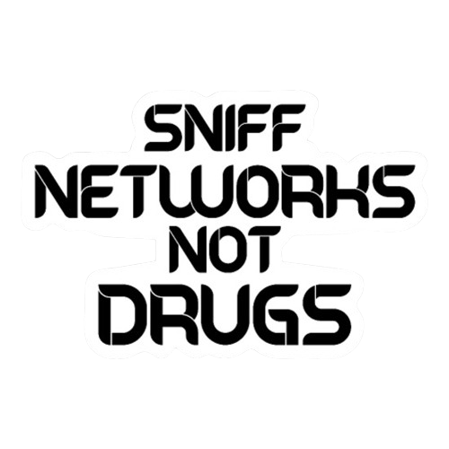
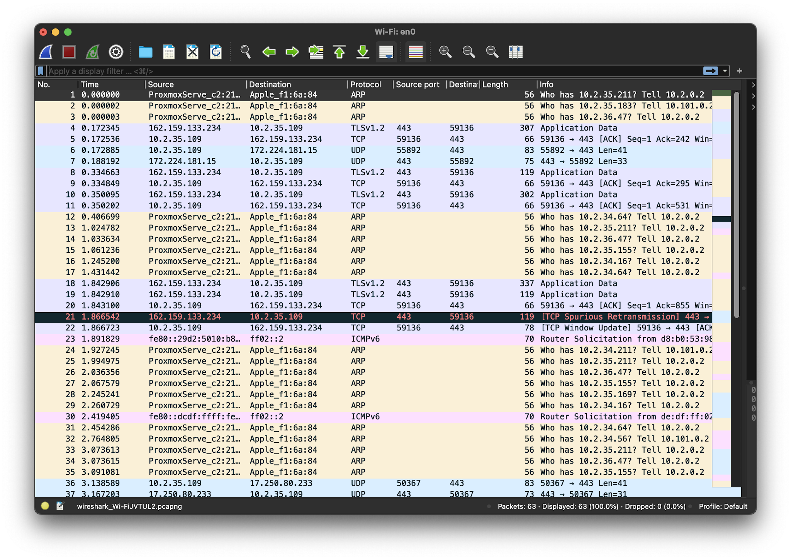

9. Síťová analýza & Wireshark
Letní škola sítí
Přednášejí: Michal Koudela, Jan Marval
Odchytávání provozu (Traffic Capture)
- Chceme-li analyzovat síť, musíme provoz odchytit na rozhraní (interfacu).
- Data se ukládají do souborů:
.pcap, .pcapng, .cap, .dmp.
- Kdo odchytává:
tcpdump (odchytává TCP i UDP).
- Kdo analizuje:
Wireshark (GUI) a tshark / termshark (CLI).
Wireshark vs. Tshark
Wireshark (GUI)
- Dostupný pro Windows, Linux, macOS.
- Pohodlné grafické rozhraní.
- Množství analytických funkcí a grafů.
- O něco pomalejší při obřích souborech.
Tshark / Termshark (CLI)
- Běží přímo v terminálu (Linux, macOS).
- Extrémně rychlý a lehký.
- Vhodný pro skripty a vzdálenou správu.
- Méně funkcí než plná GUI verze.

Jak začít odchytávat v Wiresharku
- Výběr rozhraní: Uprostřed vybereme síťovou kartu (např.
eth0, en0, wlan0), kde vidíme graf provozu.
- Start odchytávání: Klikneme na Modrou žraločí ploutev.
- Zastavení: Klikneme na Červený čtvereček.
- Otevření souboru:
File → Open → vybrat .pcap.
Přehled rozhraní Wiresharku

Horní část: Seznam paketů | Prostřední část: Anatomie paketu | Dolní část: Hexa bajty
Anatomie zachyceného paketu
- Wireshark automaticky rozebere paket podle vrstev OSI modelu.
- Každou vrstvu lze rozkliknout pro zobrazení detailů:
- Ethernet II (MAC adresy)
- IPv4 (IP adresy, TTL)
- TCP/UDP (Porty, Vlajky)
- Aplikace (HTTP, DNS...)
Filtrování provozu (Display Filters)
Potřebujeme-li se rychle zorientovat, zadáme filtr do horní lišty:
ip.addr == 192.168.0.2 – zobrazí veškerou komunikaci dané IP
Porovnání:
== rovná se!= nerovná se! negace výroků
Logické operátory:
&& nebo and (A zároveň)|| nebo or (Nebo)- Závorky
() pro složité filtry
TCP komunikace & 3-Way Handshake
- Většina spolehlivého provozu běží na TCP (HTTP, SSH, FTP).
- Každé spojení začíná třífázovým podáním ruky (Three-Way Handshake):
SYN (Žádost)SYN / ACK (Potvrzení a žádost)ACK (Potvrzení)
UDP komunikace
- Používá se pro neprioritní nebo časově citlivá data (Videa, VoIP, DNS).
- Nemá žádný handshake – data se posílají bez potvrzení doručení.
- UDP často generuje velký objem dat a „zahlcuje“ síť.
HTTP & HTTPS komunikace
- HTTP: Nešifrovaný přenos webu. Všechny požadavky (
GET, POST, PUT) a hesla jsou v pcapu čitelné.
- HTTPS: Šifrovaná verze přes TLS/SSL. Provoz v pcapu nelze přímo přečíst.
Přenos souborů: FTP, TFTP, SFTP
- TFTP: Primitivní protokol přes UDP (Wireshark z něj umí vyexportovat přenášené soubory přes
Export Objects).
- FTP: Klasický nešifrovaný přenos souborů a hesel.
- SFTP: Bezpečný přenos šifrovaný přes SSH (nelze v pcapu přečíst).
DHCP komunikace
- Používá se při analýze závad na síti (příděly IP adres, brány a DNS).
- Proces DORA: Discover → Offer → Request → Ack.
- Rozlišujeme
DHCPv4 (IPv4) a DHCPv6 (IPv6).
ARP komunikace (Address Resolution)
- Překládá IP adresy na fyzické MAC adresy v lokální síti.
- Probíhá formou Broadcastu (*„Kdo má tuto IP?“*).
- Na switchích často tvoří výraznou část síťového provozu.
Vzdálená správa: SSH vs. Telnet
- Telnet: Starý protokol bez šifrování. Všechno (včetně jména a hesla) je v pcapu čitelné v plain-textu! Nebezpečné!
- SSH (SSHv2):** Moderní šifrovaný protokol. Veškerá komunikace je kryptograficky chráněna. Bezpečné
Praktické cvičení
- Rozbalte soubory a otevřete je ve Wiresharku.
- Vyfiltrujte si komunikaci na
telnet a najděte zachycené heslo.
- Pomocí filtru
http najděte přihlašovací udaje na webu.
- Zkoušejte funkce
Follow TCP Stream a Export Objects.